library(tidyverse)
library(haven)
data <- read_dta("data/state_crime.dta")
ggplot(data, aes(x = poverty, y = murder)) +
geom_point()Simple linear regression
In this part you will learn about the following basic tasks:
Fit a simple (bivariate) linear regression model.
Interpret the intercept and slope of a regression equation.
Interpret \(R^2\) as the proportion of variance explained.
Use scatterplots with a fitted regression line to check whether a linear model is appropriate.
Recognize the influence of outliers on regression results.
Fit a regression model with a categorical (dummy) predictor and relate the coefficient to a difference in group means.
Simple linear regression describes the relationship between one outcome variable (the dependent variable, Y) and one predictor variable (the independent variable, X) by a straight line:
\[ E(Y) = b_0 + b_1 X \]
The intercept \(b_0\) is the expected value of Y when X equals 0. The slope \(b_1\) is the expected change in Y for a one-unit increase in X. The coefficient of determination, \(R^2\), indicates the proportion of variance in Y explained by X.
A regression model summarizes a relationship with a small number of numbers (intercept, slope, \(R^2\)). This is convenient, but it can also hide important features of the data. Always inspect a scatterplot together with the regression output. Datasets with very different patterns can produce identical regression coefficients, standard errors, and \(R^2\) values. This is famously illustrated by Anscombe’s quartet, which you will reconstruct in the assignments below.
Regression results can also be strongly affected by a single unusual observation (an outlier). It is good practice to identify such cases in a scatterplot and to check what happens to the results with and without them.
Finally, a predictor variable need not be quantitative. A dummy variable (coded 0/1) can be used as a predictor in a regression model. In that case, the regression coefficient for the dummy variable equals the difference between the group means, and the intercept equals the mean of the reference group (the group coded 0).
R
You will learn the R functions listed below to fit and inspect simple linear regression models.
| Function | Description |
|---|---|
lm() |
Fit a linear regression model |
summary() |
Display coefficients, standard errors, and \(R^2\) for a fitted model |
coef() |
Extract the coefficients of a fitted model |
confint() |
Confidence intervals for the coefficients |
ggplot() + geom_point() + geom_smooth() |
Scatterplot with a fitted regression line |
t.test() |
Independent samples t-test, to compare with a regression on a dummy variable |
predict() |
Predicted values from a fitted model |
Examples:
Load the data and inspect a scatterplot before fitting a model:
Add case labels to identify unusual observations (here, the label is the state name):
ggplot(data, aes(x = poverty, y = murder, label = state)) +
geom_point() +
geom_text(nudge_y = 0.5, size = 3)Fit a simple linear regression model:
fit <- lm(murder ~ poverty, data = data)
summary(fit)The summary() output includes the intercept and slope (under Estimate), their standard errors, t-values, p-values, and the value of \(R^2\) (Multiple R-squared).
Add the fitted regression line to the scatterplot:
ggplot(data, aes(x = poverty, y = murder)) +
geom_point() +
geom_smooth(method = "lm", se = FALSE)Fit the model excluding a specific case (here, excluding Washington DC), without removing the observation from the dataset:
fit_no_dc <- lm(murder ~ poverty, data = data |> filter(state != "DC"))
summary(fit_no_dc)Extract just the coefficients, or a confidence interval for the slope:
coef(fit)
confint(fit)Compare a regression on a dummy variable to a t-test of the difference in means. The two approaches give the same estimate of the difference:
t.test(hrinc ~ sex, data = data)
fit_sex <- lm(hrinc ~ sex, data = data)
summary(fit_sex)The regression coefficient for sex equals the difference in mean hrinc between the two groups. The intercept equals the mean hrinc of the reference group (the group coded 0).
Obtain predicted values for the observations in the data, or for new values of X:
data <- data |>
mutate(pred_murder = predict(fit))
predict(fit, newdata = tibble(poverty = c(10, 15, 20)))Assignments
Anscombe’s quartet
Use the dataset
anscombe. This built-in dataset contains four pairs of variables, (x1,y1), (x2,y2), (x3,y3), and (x4,y4).Fit four separate bivariate regressions:
y1onx1,y2onx2,y3onx3, andy4onx4. Compare the intercepts, slopes, standard errors, and \(R^2\) values of the four models. What do you notice?Make a scatterplot with a fitted regression line for each of the four pairs. Inspect the four plots side by side (for example using
patchworkorfacet_wrap()after reshaping the data to long format).What is your conclusion? Why is it not sufficient to only report regression coefficients and \(R^2\)?
Crime and poverty
Use the dataset state_crime. This dataset contains, for each U.S. state, the murder rate (murder) and a poverty score (poverty).
Make a scatterplot of
murderagainstpoverty, with state names (state) as labels. Which state stands out as an outlier?Fit a regression of
murderonpovertyusing all states. Report and interpret the intercept, the slope, and \(R^2\).Refit the regression excluding the outlying state, without removing the observation from the dataset (use a
filter()inside thedataargument, or subset only for this call). Compare the intercept, slope, and \(R^2\) to the results in the previous question. What is the effect of this single observation on the results?
Income and age
Use the dataset sbs399. We focus on the relation between age and hourly income hrinc.
Make a scatterplot of
hrincagainstage. Do you notice anything unusual in the data (for instance, in the distribution ofhrinc)? Does the relationship look linear?Fit a regression of
hrinconage. Interpret the intercept, the slope, and \(R^2\).Compute the mean of
hrincseparately for men and women (e.g. usinggroup_by()andsummarise(), ort.test()). What is the difference between the two means?Fit a regression of
hrinconsex(a dummy variable). Compare the regression coefficient forsexto the difference in means found in the previous question. What do you conclude about the relation between a two-group t-test and a regression on a dummy variable?
Nonlinearity
Use the dataset sesam. We study the relation between a general IQ test score (peabody) and a post-test score (postnumb).
Make a scatterplot of
postnumbagainstpeabody. Does the relationship look linear, or does it look like it is increasing but at a decreasing rate?Fit a linear regression of
postnumbonpeabody. Report and interpret the intercept, slope, and \(R^2\). Is the null hypothesis of no relation betweenpeabodyandpostnumbrejected?Create a dummy variable
femalefromsex. Compare the meanpostnumbof boys and girls usingt.test(), and again using a regression ofpostnumbonfemale. Do the two approaches agree? Is there evidence that boys and girls differ, on average, onpostnumb?
Answers
Make sure this file is in the same R Project as the data folder. Use relative file paths, not full paths to your computer.
library(tidyverse)── Attaching core tidyverse packages ──────────────────────── tidyverse 2.0.0 ──
✔ dplyr 1.2.1 ✔ readr 2.2.0
✔ forcats 1.0.1 ✔ stringr 1.6.0
✔ ggplot2 4.0.3 ✔ tibble 3.3.1
✔ lubridate 1.9.5 ✔ tidyr 1.3.2
✔ purrr 1.2.2
── Conflicts ────────────────────────────────────────── tidyverse_conflicts() ──
✖ dplyr::filter() masks stats::filter()
✖ dplyr::lag() masks stats::lag()
ℹ Use the conflicted package (<http://conflicted.r-lib.org/>) to force all conflicts to become errorslibrary(haven)
data(anscombe)
state_crime <- read_dta("data/state_crime.dta")
sbs399 <- read_dta("data/sbs399.dta")
sesam <- read_dta("data/sesam.dta")Anscombe’s quartet
1. Four regressions with identical output
fit1 <- lm(y1 ~ x1, data = anscombe)
fit2 <- lm(y2 ~ x2, data = anscombe)
fit3 <- lm(y3 ~ x3, data = anscombe)
fit4 <- lm(y4 ~ x4, data = anscombe)
summary(fit1)
Call:
lm(formula = y1 ~ x1, data = anscombe)
Residuals:
Min 1Q Median 3Q Max
-1.92127 -0.45577 -0.04136 0.70941 1.83882
Coefficients:
Estimate Std. Error t value Pr(>|t|)
(Intercept) 3.0001 1.1247 2.667 0.02573 *
x1 0.5001 0.1179 4.241 0.00217 **
---
Signif. codes: 0 '***' 0.001 '**' 0.01 '*' 0.05 '.' 0.1 ' ' 1
Residual standard error: 1.237 on 9 degrees of freedom
Multiple R-squared: 0.6665, Adjusted R-squared: 0.6295
F-statistic: 17.99 on 1 and 9 DF, p-value: 0.00217summary(fit2)
Call:
lm(formula = y2 ~ x2, data = anscombe)
Residuals:
Min 1Q Median 3Q Max
-1.9009 -0.7609 0.1291 0.9491 1.2691
Coefficients:
Estimate Std. Error t value Pr(>|t|)
(Intercept) 3.001 1.125 2.667 0.02576 *
x2 0.500 0.118 4.239 0.00218 **
---
Signif. codes: 0 '***' 0.001 '**' 0.01 '*' 0.05 '.' 0.1 ' ' 1
Residual standard error: 1.237 on 9 degrees of freedom
Multiple R-squared: 0.6662, Adjusted R-squared: 0.6292
F-statistic: 17.97 on 1 and 9 DF, p-value: 0.002179summary(fit3)
Call:
lm(formula = y3 ~ x3, data = anscombe)
Residuals:
Min 1Q Median 3Q Max
-1.1586 -0.6146 -0.2303 0.1540 3.2411
Coefficients:
Estimate Std. Error t value Pr(>|t|)
(Intercept) 3.0025 1.1245 2.670 0.02562 *
x3 0.4997 0.1179 4.239 0.00218 **
---
Signif. codes: 0 '***' 0.001 '**' 0.01 '*' 0.05 '.' 0.1 ' ' 1
Residual standard error: 1.236 on 9 degrees of freedom
Multiple R-squared: 0.6663, Adjusted R-squared: 0.6292
F-statistic: 17.97 on 1 and 9 DF, p-value: 0.002176summary(fit4)
Call:
lm(formula = y4 ~ x4, data = anscombe)
Residuals:
Min 1Q Median 3Q Max
-1.751 -0.831 0.000 0.809 1.839
Coefficients:
Estimate Std. Error t value Pr(>|t|)
(Intercept) 3.0017 1.1239 2.671 0.02559 *
x4 0.4999 0.1178 4.243 0.00216 **
---
Signif. codes: 0 '***' 0.001 '**' 0.01 '*' 0.05 '.' 0.1 ' ' 1
Residual standard error: 1.236 on 9 degrees of freedom
Multiple R-squared: 0.6667, Adjusted R-squared: 0.6297
F-statistic: 18 on 1 and 9 DF, p-value: 0.002165# Coefficients, standard errors, and R-squared are (essentially) identical
# for all four regressions: intercept = 3.00, slope = 0.50, SE(slope) = 0.12,
# R-squared = 0.67.The four sets of results side by side.
list(set1 = fit1, set2 = fit2, set3 = fit3, set4 = fit4) |>
imap(\(fit, name) tibble(
set = name,
intercept = coef(fit)[1],
slope = coef(fit)[2],
se_slope = summary(fit)$coefficients[2, 2],
r_squared = summary(fit)$r.squared
)) |>
list_rbind()# A tibble: 4 × 5
set intercept slope se_slope r_squared
<chr> <dbl> <dbl> <dbl> <dbl>
1 set1 3.00 0.500 0.118 0.667
2 set2 3.00 0.5 0.118 0.666
3 set3 3.00 0.500 0.118 0.666
4 set4 3.00 0.500 0.118 0.667# the same four numbers, four times overScatterplots with fitted regression line:
ggplot(anscombe, aes(x = x1, y = y1)) +
geom_point() +
geom_smooth(method = "lm", se = FALSE)`geom_smooth()` using formula = 'y ~ x'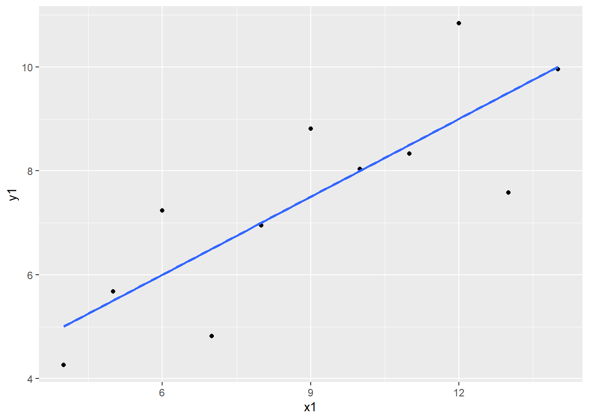
ggplot(anscombe, aes(x = x2, y = y2)) +
geom_point() +
geom_smooth(method = "lm", se = FALSE)`geom_smooth()` using formula = 'y ~ x'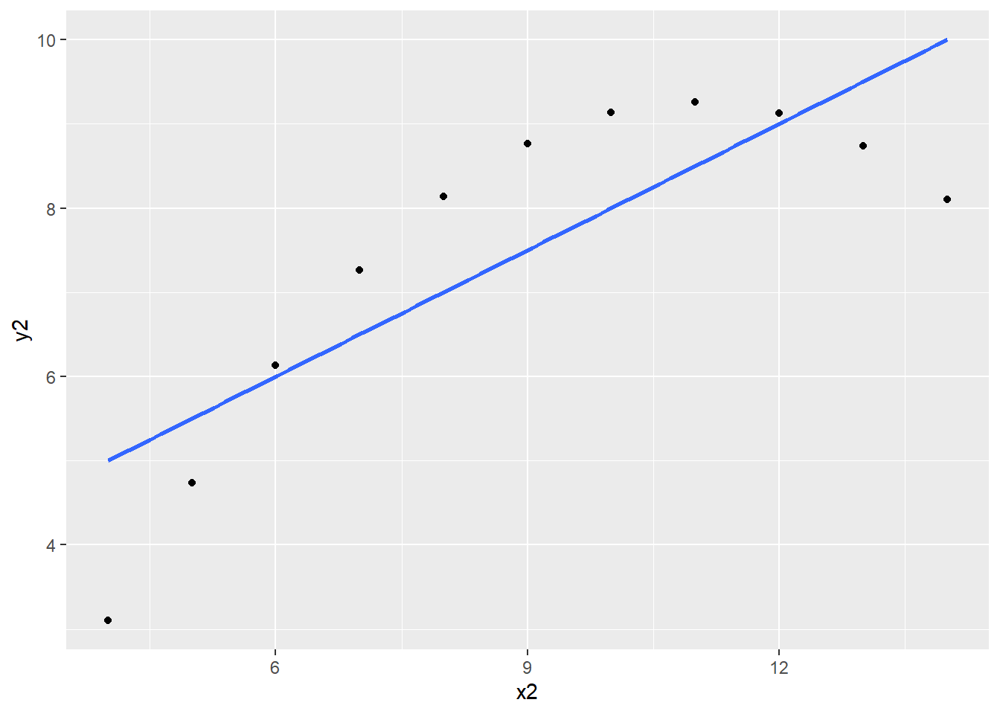
ggplot(anscombe, aes(x = x3, y = y3)) +
geom_point() +
geom_smooth(method = "lm", se = FALSE)`geom_smooth()` using formula = 'y ~ x'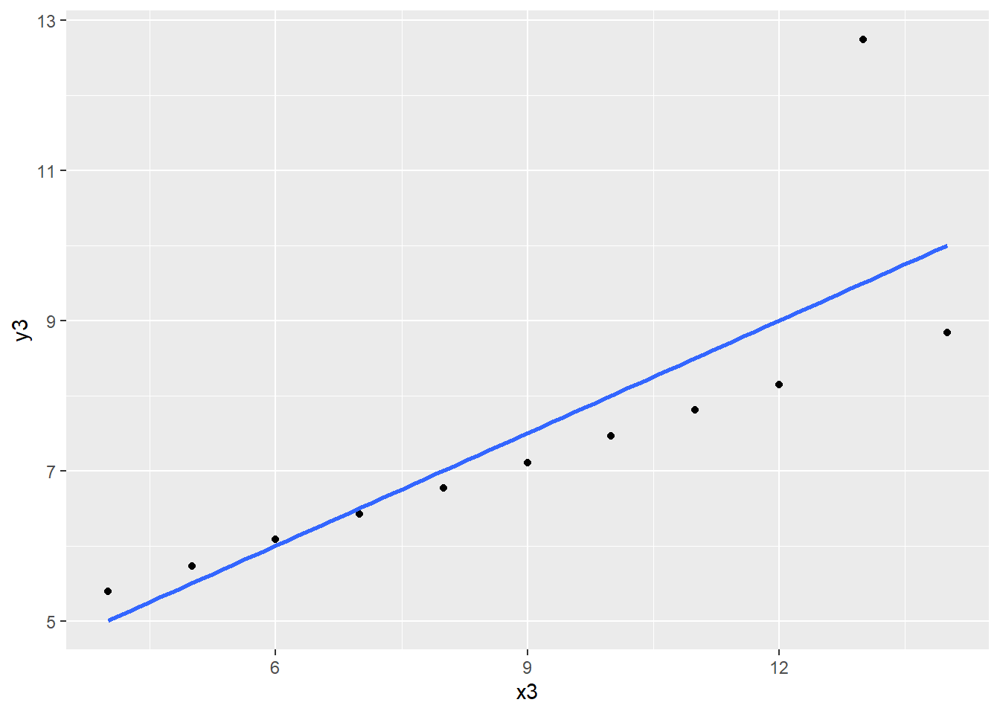
ggplot(anscombe, aes(x = x4, y = y4)) +
geom_point() +
geom_smooth(method = "lm", se = FALSE)`geom_smooth()` using formula = 'y ~ x'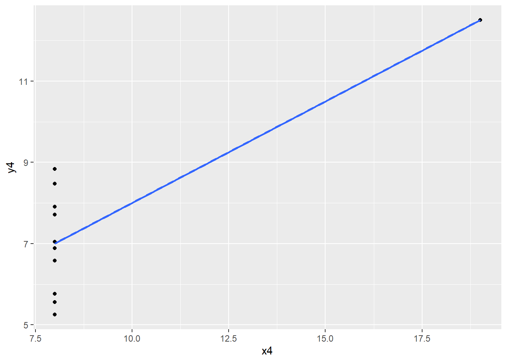
All four plots combined, after reshaping to long format:
anscombe_long <- anscombe |>
pivot_longer(
everything(),
names_to = c(".value", "set"),
names_pattern = "(x|y)(\\d)"
)
anscombe_long |>
slice(1:8)# A tibble: 8 × 3
set x y
<chr> <dbl> <dbl>
1 1 10 8.04
2 2 10 9.14
3 3 10 7.46
4 4 8 6.58
5 1 8 6.95
6 2 8 8.14
7 3 8 6.77
8 4 8 5.76# ".value" turns x and y into columns, the digit becomes the set number
# note that we pivot the raw anscombe data: adding a row number first would
# create a column that does not match the patternggplot(anscombe_long, aes(x = x, y = y)) +
geom_point() +
geom_smooth(method = "lm", se = FALSE) +
facet_wrap(~ set) +
labs(title = "Anscombe's quartet")`geom_smooth()` using formula = 'y ~ x'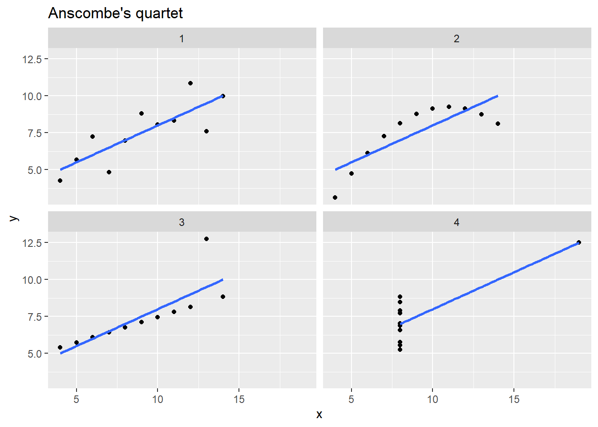
# Results (coefficients, SEs, R-squared) for all four regressions are identical.
# From these results you might be tempted to conclude that the data look
# identical. But the four scatterplots look completely different:
# - Set 1: a roughly linear relationship, well described by the line.
# - Set 2: a clear curved (nonlinear) relationship; a line is not appropriate.
# - Set 3: a perfect linear relationship except for one outlier that pulls
# the line away from the other points.
# - Set 4: no relationship at all except for one high-leverage point that
# alone determines the slope.
# Conclusion: never rely on regression coefficients and R-squared alone,
# always inspect a scatterplot.Crime and poverty
2. Spotting the outlier
ggplot(state_crime, aes(x = poverty, y = murder)) +
geom_point()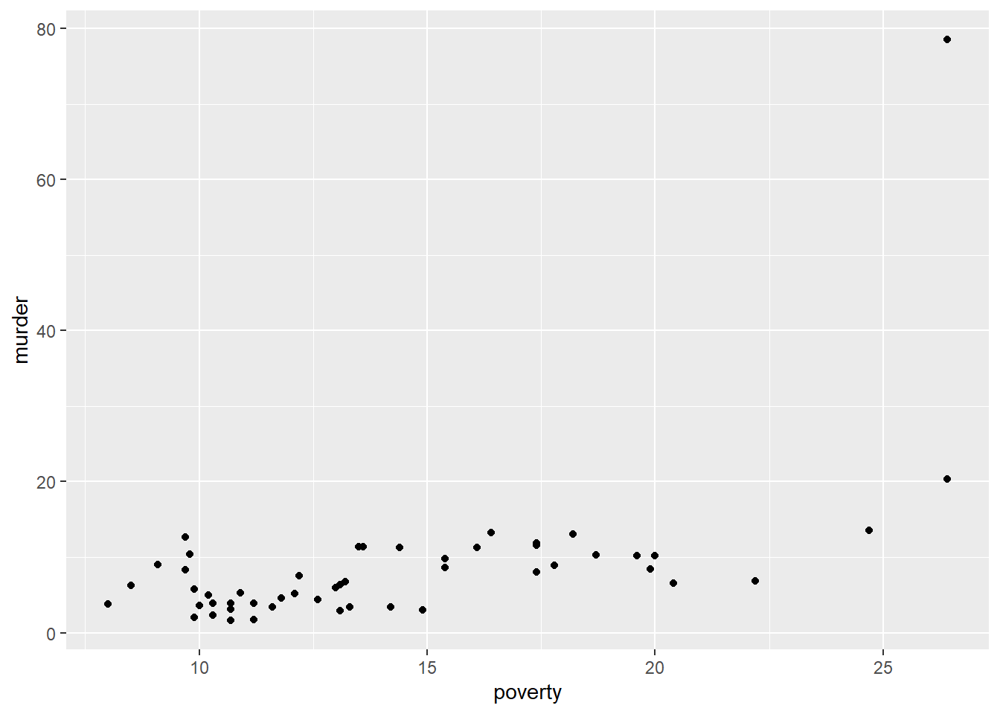
ggplot(state_crime, aes(x = poverty, y = murder, label = state)) +
geom_point() +
geom_text(nudge_y = 0.5, size = 3)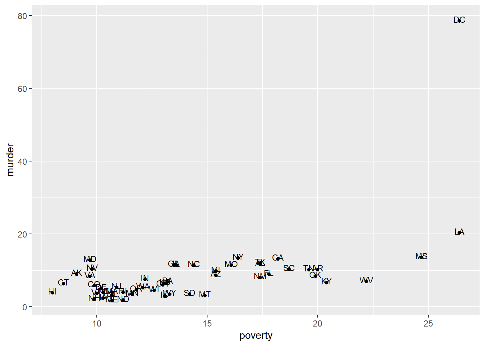
# The outlier is Washington DC, with an exceptionally high murder rate.state_crime |>
slice_max(murder, n = 5) |>
select(state, poverty, murder)# A tibble: 5 × 3
state poverty murder
<chr> <dbl> <dbl>
1 DC 26.4 78.5
2 LA 26.4 20.3
3 MS 24.7 13.5
4 NY 16.4 13.3
5 CA 18.2 13.1# the five highest murder rates, to confirm how far DC stands apart3. Regression using all states
fit_crime <- lm(murder ~ poverty, data = state_crime)
summary(fit_crime)
Call:
lm(formula = murder ~ poverty, data = state_crime)
Residuals:
Min 1Q Median 3Q Max
-12.333 -4.177 -0.875 1.569 53.710
Coefficients:
Estimate Std. Error t value Pr(>|t|)
(Intercept) -10.1364 4.1206 -2.460 0.0175 *
poverty 1.3230 0.2754 4.804 1.51e-05 ***
---
Signif. codes: 0 '***' 0.001 '**' 0.01 '*' 0.05 '.' 0.1 ' ' 1
Residual standard error: 8.926 on 49 degrees of freedom
Multiple R-squared: 0.3202, Adjusted R-squared: 0.3063
F-statistic: 23.08 on 1 and 49 DF, p-value: 1.508e-05# E(murder) = -10.14 + 1.32 poverty (SE = 0.28)
#
# A 1 unit increase in the poverty scale yields a predicted increase of
# 1.32 units in the murder rate. R-squared = 0.32: 32% of the variance
# in murder rate is explained by the poverty rate.confint(fit_crime) 2.5 % 97.5 %
(Intercept) -18.4170837 -1.855707
poverty 0.7695805 1.876339# a confidence interval for the slope, to compare with the next modelNote that the intercept is negative, which would mean a negative murder rate at a poverty score of 0. That is not a defect of the model: a poverty score of 0 lies outside the range of the data, so the intercept has no substantive interpretation here.
range(state_crime$poverty)[1] 8.0 26.4# the observed range of poverty; the intercept extrapolates far below it4. Regression excluding the outlier
fit_crime_no_dc <- lm(murder ~ poverty, data = state_crime |> filter(state != "DC"))
summary(fit_crime_no_dc)
Call:
lm(formula = murder ~ poverty, data = filter(state_crime, state !=
"DC"))
Residuals:
Min 1Q Median 3Q Max
-5.2134 -2.2472 -0.3956 2.2659 7.8896
Coefficients:
Estimate Std. Error t value Pr(>|t|)
(Intercept) -0.8567 1.5278 -0.561 0.578
poverty 0.5842 0.1043 5.600 1.02e-06 ***
---
Signif. codes: 0 '***' 0.001 '**' 0.01 '*' 0.05 '.' 0.1 ' ' 1
Residual standard error: 3.131 on 48 degrees of freedom
Multiple R-squared: 0.3952, Adjusted R-squared: 0.3826
F-statistic: 31.36 on 1 and 48 DF, p-value: 1.017e-06# E(murder) = -0.86 + 0.58 poverty (SE = 0.10)
#
# A 1 unit increase in the poverty scale now gives a predicted increase
# of only 0.58 units in the murder rate, about half the earlier estimate.
# R-squared = 0.40: 40% of the variance in murder rate is now explained
# by the poverty rate. A single unusual observation (DC) had a
# substantial effect on the slope, its standard error, and R-squared.bind_rows(
tibble(model = "all states", intercept = coef(fit_crime)[1], slope = coef(fit_crime)[2],
r_squared = summary(fit_crime)$r.squared),
tibble(model = "without DC", intercept = coef(fit_crime_no_dc)[1], slope = coef(fit_crime_no_dc)[2],
r_squared = summary(fit_crime_no_dc)$r.squared)
)# A tibble: 2 × 4
model intercept slope r_squared
<chr> <dbl> <dbl> <dbl>
1 all states -10.1 1.32 0.320
2 without DC -0.857 0.584 0.395# the two models side by sideggplot(state_crime, aes(x = poverty, y = murder)) +
geom_point() +
geom_smooth(method = "lm", se = FALSE) +
geom_smooth(
data = state_crime |> filter(state != "DC"),
method = "lm", se = FALSE, linetype = "dashed"
)`geom_smooth()` using formula = 'y ~ x'
`geom_smooth()` using formula = 'y ~ x'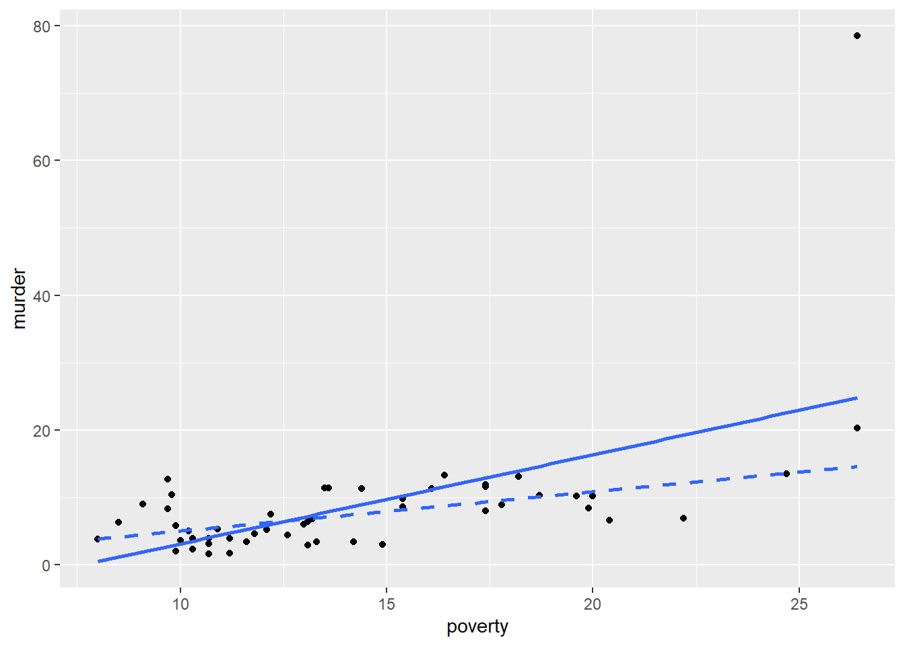
# solid line: all states; dashed line: excluding DC
# one observation visibly rotates the fitted lineNote that dropping DC raises \(R^2\) even though the fit is now based on less extreme data. \(R^2\) is a ratio, and DC inflated both the explained and the total variance; removing it changes the two by different amounts. This is a good reason not to read \(R^2\) as a measure of how “good” a model is in any absolute sense.
Income and age
5. Scatterplot of income against age
ggplot(sbs399, aes(x = age, y = hrinc)) +
geom_point()Warning: Removed 1381 rows containing missing values or values outside the scale range
(`geom_point()`).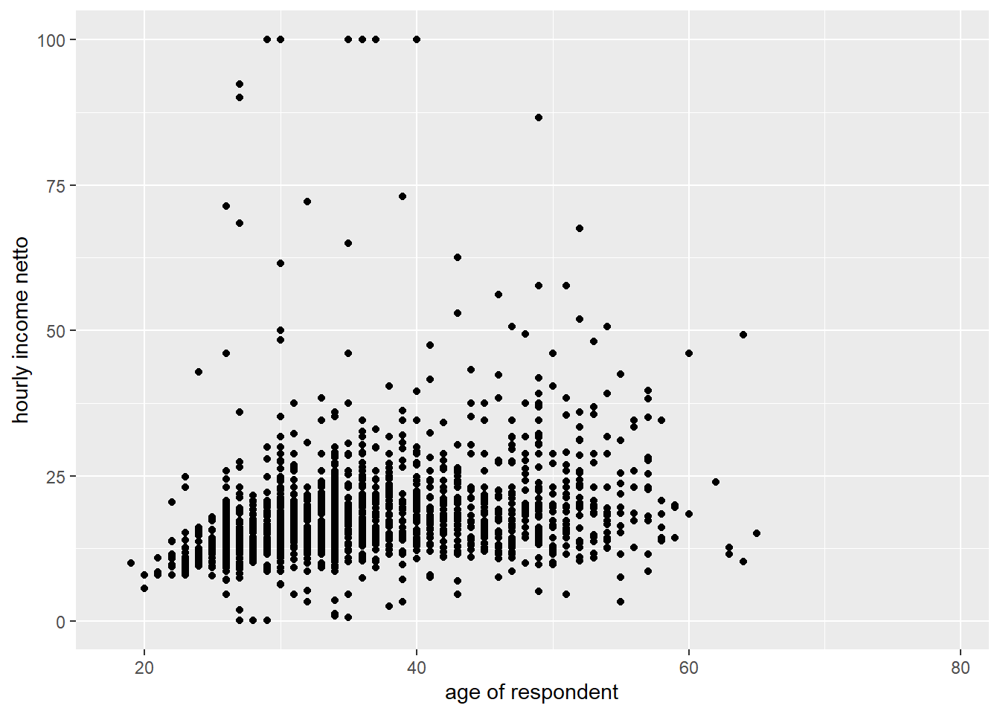
# We expect a positive relation between age and hourly income.
# A number of observations have hrinc equal to exactly 100. It is unclear
# whether this reflects missing values or values top-coded at 100 -- this
# should be checked. These observations may be outliers in Y-space.
# The relation may not be strictly linear; possibly quadratic.Check the suspicion about the value 100 before doing anything else.
sbs399 |>
count(hrinc) |>
slice_max(hrinc, n = 5)# A tibble: 5 × 2
hrinc n
<dbl> <int>
1 100 8
2 92.3 1
3 90 1
4 86.6 1
5 73.1 1# a spike at exactly 100 would confirm top-coding or a missing value codesum(sbs399$hrinc == 100, na.rm = TRUE)[1] 8# how many observations sit exactly at 1006. Regression of income on age
fit_age <- lm(hrinc ~ age, data = sbs399)
summary(fit_age)
Call:
lm(formula = hrinc ~ age, data = sbs399)
Residuals:
Min 1Q Median 3Q Max
-20.503 -4.030 -1.474 1.737 83.604
Coefficients:
Estimate Std. Error t value Pr(>|t|)
(Intercept) 8.02366 0.89163 8.999 <2e-16 ***
age 0.28871 0.02472 11.681 <2e-16 ***
---
Signif. codes: 0 '***' 0.001 '**' 0.01 '*' 0.05 '.' 0.1 ' ' 1
Residual standard error: 9.142 on 1967 degrees of freedom
(1381 observations deleted due to missingness)
Multiple R-squared: 0.06487, Adjusted R-squared: 0.06439
F-statistic: 136.4 on 1 and 1967 DF, p-value: < 2.2e-16# E(hrinc) = 8.02 + 0.29 age (SE = 0.03)
#
# R-squared = 0.065. If age increases by 1 year, hourly income
# significantly rises by 0.29 EUR. Age explains 6.5% of the variance
# in income.The intercept of 8.02 is the predicted income at age 0, which is meaningless in itself: nobody in the data is anywhere near that age.
range(sbs399$age, na.rm = TRUE)[1] 18 79# centring age would give the intercept a usable interpretationlm(hrinc ~ I(age - mean(age, na.rm = TRUE)), data = sbs399) |>
coef() (Intercept) I(age - mean(age, na.rm = TRUE))
18.9177742 0.2887148 # after centring, the intercept is the predicted income at the mean age
# the slope is unchanged7. Mean income for men and women
table(sbs399$sex, useNA = "ifany")
0 1
1699 1651 # sex = 0 for men and sex = 1 for womensbs399 |>
group_by(sex) |>
summarise(mean_hrinc = mean(hrinc, na.rm = TRUE))# A tibble: 2 × 2
sex mean_hrinc
<dbl+lbl> <dbl>
1 0 [man] 19.6
2 1 [woman] 16.2t.test(hrinc ~ sex, data = sbs399)
Welch Two Sample t-test
data: hrinc by sex
t = 8.1499, df = 1868.4, p-value = 6.596e-16
alternative hypothesis: true difference in means between group 0 and group 1 is not equal to 0
95 percent confidence interval:
2.591711 4.234369
sample estimates:
mean in group 0 mean in group 1
19.59728 16.18424 # E(hrinc) for men = 19.60; E(hrinc) for women = 16.18
# Women have 3.42 EUR lower income than men.8. Regression on a dummy variable
fit_sex <- lm(hrinc ~ sex, data = sbs399)
summary(fit_sex)
Call:
lm(formula = hrinc ~ sex, data = sbs399)
Residuals:
Min 1Q Median 3Q Max
-19.497 -4.684 -1.784 1.716 83.816
Coefficients:
Estimate Std. Error t value Pr(>|t|)
(Intercept) 19.5973 0.2757 71.073 < 2e-16 ***
sex -3.4130 0.4244 -8.041 1.52e-15 ***
---
Signif. codes: 0 '***' 0.001 '**' 0.01 '*' 0.05 '.' 0.1 ' ' 1
Residual standard error: 9.302 on 1967 degrees of freedom
(1381 observations deleted due to missingness)
Multiple R-squared: 0.03183, Adjusted R-squared: 0.03134
F-statistic: 64.66 on 1 and 1967 DF, p-value: 1.519e-15# The regression coefficient for sex = -3.41, which is the difference
# in expected hourly income between men and women -- the same result
# as the independent-samples t-test.coef(fit_sex)(Intercept) sex
19.59728 -3.41304 # the intercept is the mean of the reference group (sex = 0, men)
# the slope is the difference between the two group meanst.test(hrinc ~ sex, data = sbs399, var.equal = TRUE)
Two Sample t-test
data: hrinc by sex
t = 8.0413, df = 1967, p-value = 1.519e-15
alternative hypothesis: true difference in means between group 0 and group 1 is not equal to 0
95 percent confidence interval:
2.580646 4.245434
sample estimates:
mean in group 0 mean in group 1
19.59728 16.18424 # the default t.test() does NOT assume equal variances, while lm() does
# with var.equal = TRUE the t-value and p-value match the regression exactlyA regression on a single dummy variable and an independent samples t-test are the same procedure, provided both assume equal variances. The regression formulation is more general: it extends to several predictors, whereas the t-test does not.
Nonlinearity
9. Scatterplot of postnumb against peabody
ggplot(sesam, aes(x = peabody, y = postnumb)) +
geom_point()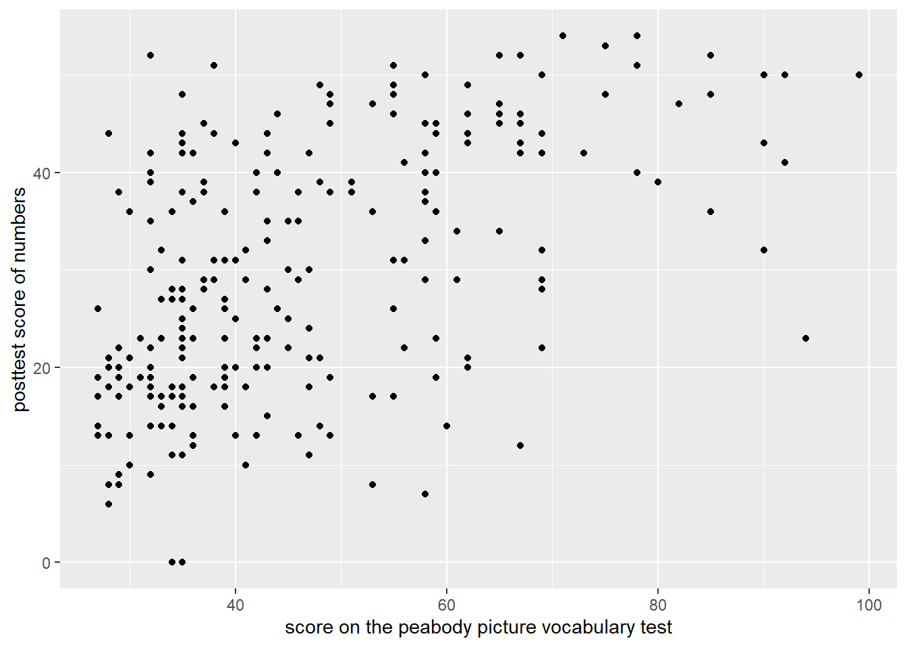
# The relation looks nonlinear: it is increasing, but decreasingly so.
# A quadratic transformation of peabody might help.ggplot(sesam, aes(x = peabody, y = postnumb)) +
geom_point() +
geom_smooth(method = "lm", se = FALSE) +
geom_smooth(method = "loess", se = FALSE, linetype = "dashed")`geom_smooth()` using formula = 'y ~ x'
`geom_smooth()` using formula = 'y ~ x'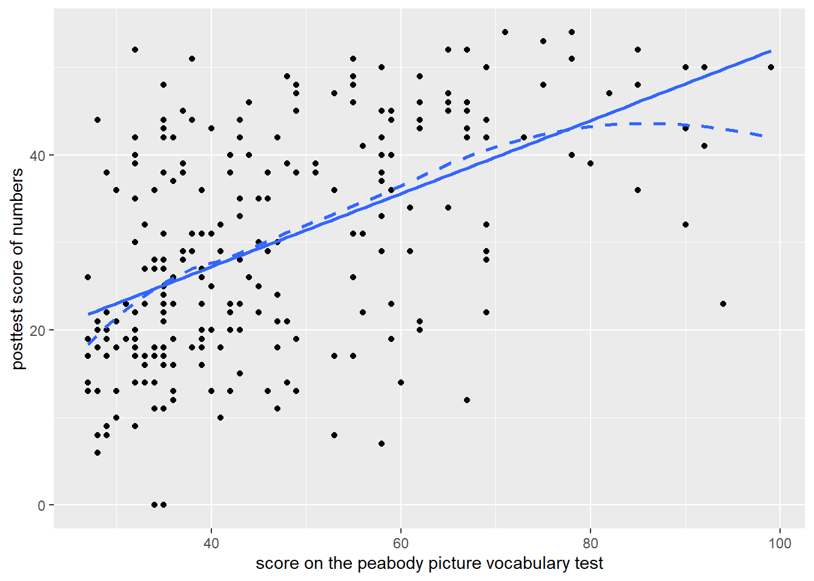
# the straight line and a smoother in one plot
# where the dashed curve bends away from the line, a linear model misfits10. Linear regression of postnumb on peabody
fit_peabody <- lm(postnumb ~ peabody, data = sesam)
summary(fit_peabody)
Call:
lm(formula = postnumb ~ peabody, data = sesam)
Residuals:
Min 1Q Median 3Q Max
-27.7455 -7.7933 -0.3047 7.7511 28.1208
Coefficients:
Estimate Std. Error t value Pr(>|t|)
(Intercept) 10.50537 2.19847 4.778 3.09e-06 ***
peabody 0.41793 0.04448 9.395 < 2e-16 ***
---
Signif. codes: 0 '***' 0.001 '**' 0.01 '*' 0.05 '.' 0.1 ' ' 1
Residual standard error: 10.99 on 238 degrees of freedom
Multiple R-squared: 0.2705, Adjusted R-squared: 0.2675
F-statistic: 88.27 on 1 and 238 DF, p-value: < 2.2e-16# E(postnumb) = 10.50 + 0.42 peabody (SE = 0.04)
# R-squared = 0.27. The null hypothesis of no relation between peabody
# and postnumb is rejected.A significant slope does not mean the linear model is appropriate. It only means a straight line fits better than a horizontal one.
fit_peabody_quad <- lm(postnumb ~ peabody + I(peabody^2), data = sesam)
summary(fit_peabody_quad)
Call:
lm(formula = postnumb ~ peabody + I(peabody^2), data = sesam)
Residuals:
Min 1Q Median 3Q Max
-29.2041 -7.3974 -0.1113 7.1954 29.0853
Coefficients:
Estimate Std. Error t value Pr(>|t|)
(Intercept) -2.075097 6.642760 -0.312 0.755023
peabody 0.929784 0.259034 3.589 0.000403 ***
I(peabody^2) -0.004652 0.002320 -2.005 0.046055 *
---
Signif. codes: 0 '***' 0.001 '**' 0.01 '*' 0.05 '.' 0.1 ' ' 1
Residual standard error: 10.93 on 237 degrees of freedom
Multiple R-squared: 0.2827, Adjusted R-squared: 0.2767
F-statistic: 46.7 on 2 and 237 DF, p-value: < 2.2e-16# if the quadratic term is significant, the relation is indeed curved
# compare the R-squared of the two models11. Comparing boys and girls
table(sesam$sex, useNA = "ifany")
1 2
115 125 # check the coding before constructing the dummysesam <- sesam |>
mutate(female = sex - 1)
table(sesam$sex, sesam$female, useNA = "ifany")
0 1
1 115 0
2 0 125# female should be 0 for boys and 1 for girls
# this recode assumes sex is coded 1 and 2; adjust if your codebook differst.test(postnumb ~ female, data = sesam)
Welch Two Sample t-test
data: postnumb by female
t = -0.012352, df = 237.24, p-value = 0.9902
alternative hypothesis: true difference in means between group 0 and group 1 is not equal to 0
95 percent confidence interval:
-3.293537 3.252494
sample estimates:
mean in group 0 mean in group 1
30.04348 30.06400 fit_female <- lm(postnumb ~ female, data = sesam)
summary(fit_female)
Call:
lm(formula = postnumb ~ female, data = sesam)
Residuals:
Min 1Q Median 3Q Max
-30.064 -11.043 -1.044 11.936 23.956
Coefficients:
Estimate Std. Error t value Pr(>|t|)
(Intercept) 30.04348 1.20039 25.028 <2e-16 ***
female 0.02052 1.66331 0.012 0.99
---
Signif. codes: 0 '***' 0.001 '**' 0.01 '*' 0.05 '.' 0.1 ' ' 1
Residual standard error: 12.87 on 238 degrees of freedom
Multiple R-squared: 6.396e-07, Adjusted R-squared: -0.004201
F-statistic: 0.0001522 on 1 and 238 DF, p-value: 0.9902# Difference in means (independent samples t-test) = 0.02, not significant.
# There is no evidence that the average postnumb scores for boys and girls
# differ. The regression gives the same conclusion: the coefficient for
# female is the difference in sample means, and it is not significant.